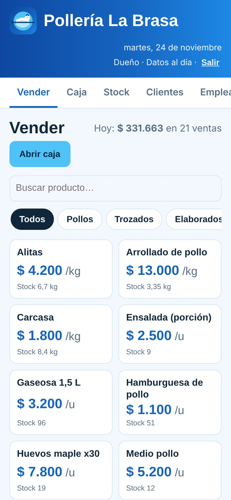
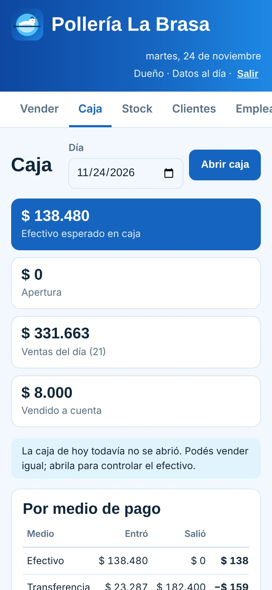
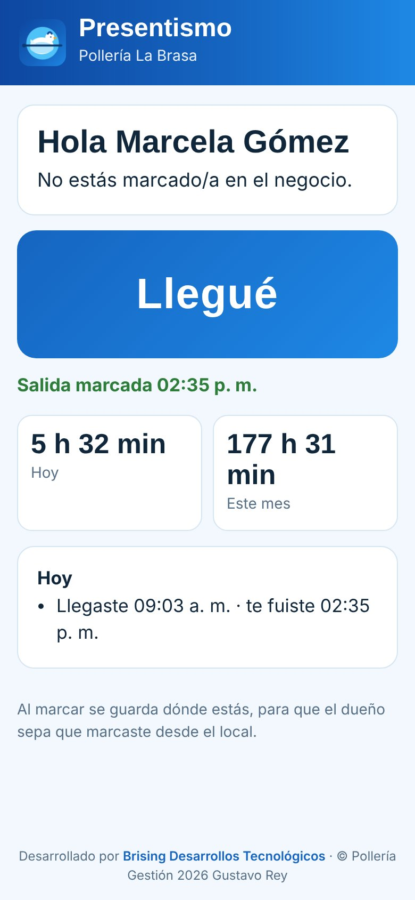

Vendé por kilo o por unidad, controlá la caja de cada turno, el stock y las cuentas corrientes, y sabé quién está trabajando. Todo compartido entre el mostrador y tu celular.

En una pollería se vende rápido, por kilo y por unidad, con varias personas en el mostrador y muchos números en la cabeza.
Pollería Gestión es una app para todo el negocio: el dueño ve todo desde su celular o computadora, el mostrador vende y maneja la caja, y cada empleado marca su llegada desde su teléfono. Los datos se comparten al instante entre todos los equipos.
Capturas reales de la app (con datos de ejemplo).


Tocás el producto; si es por kilo ponés el peso o el importe. Descuentos, mostrador, delivery o pedido, y ticket para copiar.
Efectivo, transferencia, Mercado Pago, débito, crédito y cuenta corriente. Si te equivocás, anulás la venta y vuelve el stock.
La abre un empleado con su PIN y queda a su cargo. Al irse la cierra con arqueo o se la pasa a otro, con el PIN de los dos.
Cada venta descuenta sola. Producción, mermas y recuentos; aviso cuando algo baja del mínimo.
Cada cliente con su saldo y límite; cobros y recordatorio por WhatsApp.
Cada empleado tiene su link y su PIN: marca Llegué y Me voy desde su celular, con la ubicación.
Quién está ahora en el negocio, a qué hora llegó y cuántas horas lleva hoy y en el mes.
Compras al contado o a cuenta, deuda con cada proveedor y pagos.
Alquiler, servicios, sueldos, carbón, delivery: todo por categoría.
Ventas, ticket promedio, margen, gastos y resultado; lo más vendido, horarios y medios de pago.
El mostrador, tu celular y la computadora ven lo mismo al instante.
Dueño con todo; el mostrador vende y cobra, sin ver ganancias ni gastos.
Para negocios de mostrador con uno o más puestos:
Sí. Se abre desde el navegador y se instala con su ícono, sin pasar por la tienda de aplicaciones.
Sí. El mostrador, tu celular y la computadora comparten los mismos datos al instante.
No. Cada uno recibe por WhatsApp su link de presentismo, lo instala y elige su PIN.
Sí: los datos están en la nube para que todos los equipos vean lo mismo.
No. El acceso del mostrador vende, cobra y maneja la caja; los reportes, gastos y ganancias los ves solo vos.
Sí. La versión para tu comercio lleva tu nombre, tu logo y tus colores.
Quedan guardados. Cuando tengas tu versión, seguís donde estabas.
Abrila desde el celular o la computadora, dejá tu nombre y tu WhatsApp, y empezá con los datos de ejemplo. Si te sirve, la seguís usando con todos tus datos.